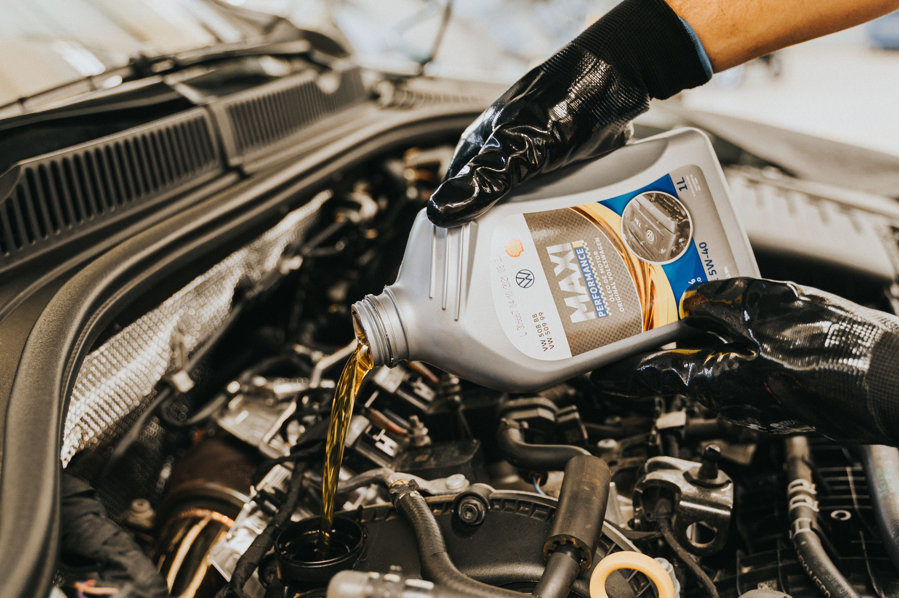

Why Do I Smell Burning Oil While Driving?
A burning oil smell while driving is almost always caused by engine oil leaking directly onto hot exhaust components, such as the exhaust manifold or catalytic converter. The most common source is a degraded valve cover gasket, though sloppy oil refills, a clogged PCV valve, or leaking oil filter housing gaskets are also top culprits.

Top Causes of Burning Oil Smells
Because the exhaust system reaches temperatures between 500°F and 1,200°F, even a tiny droplet of engine oil touching an exhaust pipe will instantly vaporize, generating thick smoke and a pungent acrid smell that enters through the cabin HVAC intake.
1. Leaking Valve Cover Gasket
The valve cover sits at the very top of your engine, directly above the hot exhaust manifolds. Over time, heat cycles harden the rubber valve cover gasket, causing it to crack. Oil then slowly seeps down the engine block and drops onto the exhaust manifold.
2. Clogged PCV Valve (Positive Crankcase Ventilation)
The PCV system vents combustion pressure out of the engine crankcase. If the PCV valve sticks closed, internal pressure builds up, blowing oil past seals and gaskets (such as dipstick O-rings or front/rear main seals) onto surrounding engine parts.
3. Oil Filter Adapter or Housing Leak
Many modern vehicles use oil filter housing assemblies made of plastic or aluminum mounted directly to the engine block. Gaskets in these units degrade over time, spraying pressurized oil onto the lower engine bay and exhaust system while driving under load.
4. Spilled Oil After an Oil Change
If oil was recently changed, a small amount may have missed the filler neck and collected in recesses on top of the valve cover. Once the engine heats up to operating temperature, this spilled oil burns off, producing a smell that typically lasts 15 to 30 minutes.
How to Locate the Source of the Leak
- Look for Wisps of Smoke: Open the hood with the engine running and warm. Look near the back or sides of the engine block for faint blueish or white smoke rising from the exhaust heat shields.
- Check Around Spark Plug Wells: Remove the engine plastic cover and inspect the top of the valve cover. Pools of oil near the spark plug boots confirm a bad valve cover or tube seal leak.
- Inspect the Driveway: Place a clean sheet of cardboard under the engine bay overnight to see if dark brown or black oil drips appear under the front or rear of the engine.
Frequently Asked Questions
It depends on the severity. While a minor seepage is not immediately dangerous, severe oil dripping onto red-hot exhaust pipes poses a fire hazard and can starve the engine of oil.
While moving, airflow pushes burning fumes underneath and away from the vehicle. When you stop at a red light, those fumes drift upward into the cabin HVAC fresh air intake.